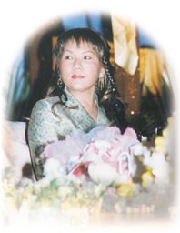
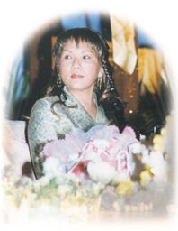

| Reportages spéciaux |
|
|
 

Le jour de la conférence, il y a eu de fortes pluies torrentielles qui selon les personnes qui vivent là-bas, sont vraiment inhabituelles à cette époque de l'année...
La conférence avait lieu dans un endroit facile d'accès, dans un building appelé "Menara PGRM." Vers 18h30, des milliers de personnes, des Malaisiens, des Chinois, des Indiens et autres, avaient rempli la salle. La Malaisie est un pays vraiment démocratique avec des citoyens de races et de cultures multiples. La gentillesse des gens s'est manifestée clairement, lorsqu'ils ont applaudi de tout coeur avant et après la projection de la vidéo "Suivez le chemin de l'Amour", diffusée sur deux larges écrans de télévision. Ils ont aussi applaudi bruyamment lorsqu'un disciple initié de Malaisie a parlé de ses propres expériences suite à sa pratique de la Méthode Guan Yin.
Lorsque Maître est arrivé, dans une longue robe vert clair, l'assistance lui a réservé un accueil très chaleureux. Sentant les vibrations positives de l'auditoire, Elle a dit : " Que le Seigneur vous bénisse d'être venus ici malgré les fortes pluies ! Puisse Dieu vous bénir, vous et votre pays, qui est vraiment magnifique, propre et prospère. Nous devons être reconnaissants envers Dieu, Bouddha, Allah, Qui ont tant béni notre pays et les gens qui sont là. Les gens d'ici sont très disciplinés et ont un niveau spirituel très élevé. "
Maître a surenchéri : " Vous êtes déjà tous Dieu ! L'essence de la vie est l'amour. L'essence de Dieu, de Bouddha, d'Allah, est l'amour. Il n'y a rien d'autre que l'amour. Lorsque nous faisons le choix de l'amour, qui est le choix le plus élevé, le pus noble, qui est notre Vrai Moi, nous sentons que nous sommes très près de Dieu, de Bouddha. Il y a beaucoup de choix possibles dans la vie, et suivant le choix que nous faisons, nous deviendrons l'être qui représentent ce choix. Au cours du temps, encore et encore, nous continuons à faire différents choix - être un être humain, un ange, un deva, être un avec Dieu ou encore revenir à la vie humaine pour se rappeler et réapprendre tout le processus. Et lorsque nous nous souvenons ou réapprenons à nouveau que nous venons de Dieu, que nous avons la Nature de Dieu, que le Saint-Esprit vit en nous, à ce moment, nous disons que nous sommes 'illuminés'. "
" Pour connaître Dieu, pour connaître votre Moi, c'est comme si vous retourniez votre paume. Regardez la paume, nous voyons Dieu, nous voyons notre Moi ; regardez de l'autre côté, nous ne voyons qu'un être mondain, humain, mortel. Si vous la retournez de nouveau, alors vous savez immédiatement que vous êtes Dieu. Il n'y a rien d'autre à l'intérieur de nous-même excepté Dieu. Cela dépend de nous d'essayer de nous en souvenir ou non. Je suis ici pour vous aider à vous en souvenir. "
" Dieu est la Lumière qui est plus étincelante que des milliers de soleils rassemblés ; Dieu est la mélodie qui remplit toute votre âme de bonheur, de contentement ; peu importe où nous sommes, à quelle race ou religion nous appartenons, quelle personnalité, quelle histoire nous avons. Si nous voulons toucher Dieu, alors Dieu se manifestera comme l'un des notre, par exemple comme Jésus, Bouddha, Mahomet, le Gourou Sikh, Krishna, un Maître, etc. Eux sont tous des manifestations personnelles et individuelles de Dieu pour que nous puissions aimer, voir, toucher et croire. Nous pouvons encore entrer en contact avec ces Maîtres si nous élevons notre niveau de conscience à leur dimension, qui est plus haut que la conscience physique de cette planète. Si je le peux, vous le pouvez aussi ; si vos frères et soeurs initiés le peuvent, vous le pouvez aussi. Cela arrive maintenant, et non il y a des milliers d'années.
La bonne nouvelle c'est que nous sommes l'un de ces "Systèmes" ; nous sommes un avec cette piété, nous sommes un avec tout ce que nous voyons, ce dont nous rêvons ou ce que nous pouvons imaginer, nous sommes tout cela. Tout comme nous sommes un des membres de l'assistance de cette pièce, mais nous sommes aussi tous ensemble l'assistance entière. Voir Dieu, Le ou La rencontrer ou même Lui parler est une chose normale pour nous. Certains parmi nous ont déjà fait de nombreux choix. Parfois nous choisissons d'être une personne ignorante ; parfois nous choisissons d'oublier que nous sommes un avec Dieu et que Dieu demeure à l'intérieur de nous. Parfois nous choisissons même de faire des choses non-divines, dites "non-divines" ou à l'opposé de l'amour. Nous avons choisi de faire tant de choses, mais peut-être que nous avons choisi ce moment pour réaliser la plus grande chose, pour nous souvenir au plus haut point de notre Moi car nous avons déjà accompli tout ce qu'il y a dans la partie la plus basse.
Maître a fait alors un cadeau au public. Elle a demandé à ceux qui voulaient faire l'expérience de Dieu de fermer les yeux, de se concentrer sur leur oeil de sagesse, et Elle leur a enseigné la Méthode pratique. Elle a aussi promis qu'Elle serait disponible 24 heures sur 24 s'ils appelaient son nom pour de l'aide. Lorsque Maître a précisé que c'était un appel téléphonique local, tout le monde a ri joyeusement.
Durant la session des questions-réponses, Maître a fait quelques remarques :
* L'oeil de sagesse est aussi appelé "L'Oeil de l'Âme". Avant que nous n'atteignions le niveau nécessaire pour être capable de voir Dieu avec à la fois les yeux physiques et l'oeil de sagesse, nous devons fermer nos yeux physiques durant la méditation pour minimiser l'influence des distractions du monde extérieur.
*Lorsque Jésus a dit : " Dans la maison de mon Père, il y a de nombreuses demeures ", le terme "demeure" désigne les différents niveaux de notre conscience. En utilisant le "chemin de l'âme", nous pouvons nous élever jusqu'au ciel et voir les différents niveaux des êtres vivants ou descendre en enfer pour aider ceux qui souffrent et les amener plus haut. Ce sont des choix que nous avons lorsque nous avons atteint l'illumination.
* " Nous ne pouvons pas tricher avec nous-même à l'heure de la mort. Peu importe ce que nous avons fait durant notre vie, notre subconscient enregistre tout ; même si personne au monde ne sait, notre subconscient le sait. Alors lorsque nous mourons, nous délaissons l'enveloppe de notre corps et tout est transparent. Nous savons absolument tout et tout le monde sait - l'univers entier sait absolument tout ce que nous avons fait ; par conséquent, nous devons prendre garde à ce que nos pensées, nos actions et nos paroles soient pures et nobles. "
* " L'oeil de sagesse est toujours ouvert ; c'est simplement que nous ne regardons pas avec. Nous avons l'habitude d'utiliser les yeux physiques et les oreilles physiques de notre corps physique, et nous oublions nos facultés célestes. C'est pourquoi nous ne nous connaissons pas nous-mêmes. "
* " Si vous méditez avec la méthode Quan Yin, par exemple, votre oeil de sagesse est clair. Vous résoudrez naturellement les problèmes sans avoir à faire d'effort ; vous serez plus sages. Les actions que vous ferez dans votre vie quotidienne vous amèneront naturellement de meilleurs résultats et vous mènerez une meilleure vie. Vous vous sentirez mieux sur tous les plans. "
* " Nous causons des guerres car nous ne reconnaissons pas Dieu ; nous ne reconnaissons pas que nous sommes une part de Dieu ; nous ne reconnaissons pas que les frères que nous tuons sont aussi une partie de Dieu, de Bouddha. C'est pourquoi tout le monde devrait être illuminé, et nous verrons que nous sommes tous un, que nous sommes tous frères et soeurs, et il n'y aura plus de guerre. "
* " Nous ne mangeons pas de viande car nous voulons développer ou nous rappeler notre Nature compatissante. Parce que Bouddha et Dieu sont miséricordieux, si nous voulons redevenir Dieu, redevenir un avec Dieu, nous devons exercer notre Sainte qualité qui est toute compassion et amour . "
* " Je ne suis pas là pour prouver quoi que ce soit. Je suis là pour vous dire que vous êtes grands. Si vous voulez vous rappeler à nouveau votre grandeur, je peux vous aider. C'est l'unique preuve, seulement pour vous le prouver à vous-même. "
Avec des centaines de gens ayant reçu l'initiation et d'autres personnes, plus nombreuses, ayant appris la Méthode Pratique et goûté l'expérience de la communication avec Dieu, la Malaisie s'est enrichie spirituellement le dernier jour du mois d'avril 2000. Ces Malais chanceux expérimenteront le vrai sens de " Chercher d'abord Dieu et les autres choses viendront à vous. "
|
|